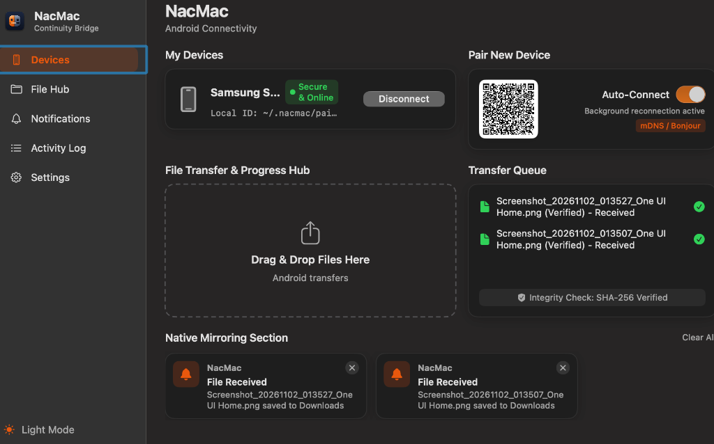
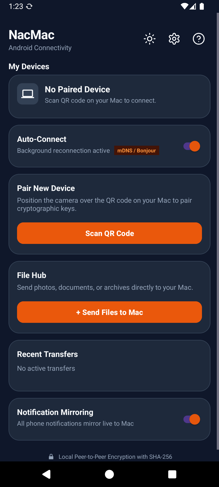

The Native AirDrop & Continuity
Alternative for Android and Mac.
High-speed local Wi-Fi file transfers, real-time notification mirroring with bidirectional dismissal, universal clipboard sync, and SMS management. Zero cloud servers. Zero account logins. 100% private.

macOS Native Workstation Hub
Menu bar resident with live connection dots, instant drag-and-drop file target, verified SHA-256 queues, and native system notification banners.

Android Companion & Pairing
Crafted in Kotlin with Jetpack Compose & Material 3. Single-tap CameraX QR pairing, foreground auto-reconnect, and verified transfer history.
Engineered for Privacy, Speed, and Simplicity
No browser engines, no Electron bloat, and no third-party cloud intermediaries. Built native in Swift 6 and Kotlin.
High-Throughput P2P File Transfer
Stream gigabytes of photos, videos, and archives over your local Wi-Fi. Transmissions are sliced into 256 KB framed chunks with live MB/s monitoring and cancellation support.
Real-Time Notification Mirroring
Intercepts alerts on Android (including MessagingStyle and app icons) and renders them as native macOS notification banners with bidirectional dismissal back to your phone.
Universal Clipboard Synchronization
Copy text, links, or code on your Mac and immediately paste on your phone, or vice versa. Built-in debouncing prevents circular broadcasts and keeps latency minimal.
Cryptographic SHA-256 Verification
Every transfer calculates a streaming SHA-256 digest at the source and validates it on the receiver before saving. Never worry about corrupted bytes or silent network drops.
Zero-Config Bonjour Discovery
macOS publishes an mDNS service (_nacmac._tcp.local) on port 52840. The Android companion automatically discovers workstations without typing manual IP addresses.
Multi-Device Management & SMS Hub
Pair multiple Android devices to a single Mac workstation. View battery states, transfer logs, and query SMS threads directly from your desktop interface.
How NacMac Compares to the Alternatives
See why NacMac is the ideal continuity bridge for macOS and Android power users.
| Capability | NacMac | LocalSend | KDE Connect | AirDroid | Bluetooth Obex |
|---|---|---|---|---|---|
| Target Platforms | macOS & Android | Cross-Platform | Cross-Platform | Multi-Platform | Universal |
| macOS Native Stack | Swift 6 & SwiftUI | Flutter Runtime | Qt / X11 Runtime | Electron / Web | Legacy OS Push |
| Data Route | 100% Local LAN (0% Cloud) | 100% Local LAN | 100% Local LAN | Cloud Relay Servers | Direct Bluetooth |
| Account / Login Required | Zero (No Account) | Zero (No Account) | Zero (No Account) | Mandatory Sign-In | None |
| Transfer Speed | 50-100+ MB/s (LAN) | 30-80 MB/s (LAN) | 20-50 MB/s (LAN) | Cloud-Capped / Throttled | ~200 KB/s |
| SHA-256 Verification | Automated & Mandatory | Optional | Custom Checksum | Varies | Basic CRC |
| Notification Mirroring | Native macOS Banners | Not Supported | Inconsistent on Mac | Web Popups | Not Supported |
| Bidirectional Dismissal | Yes (Synced to Phone) | Not Supported | Partial | Paid Subscription | Not Supported |
| Universal Clipboard | Yes (Ambient & Debounced) | Manual Send Only | Yes | Paid Subscription | Not Supported |
| License | MIT (Open Source) | GPL-3.0 | GPL-2.0 | Proprietary | Standard |
Frequently Asked Questions
Everything you need to know about NacMac architecture, security, and setup.
What is NacMac and how does it work?
NacMac is a free, open-source peer-to-peer continuity system connecting Android devices to macOS machines over your local Wi-Fi network. It enables high-speed file transfers (50-100+ MB/s), real-time notification mirroring with bidirectional dismissal, universal clipboard sync, and SMS queries without third-party cloud servers or accounts.
How is NacMac different from Apple AirDrop?
Apple AirDrop is exclusively restricted to Apple hardware (iPhone, iPad, Mac) and does not support Android. NacMac delivers an AirDrop-like seamless experience specifically tailored for users with an Android phone and a macOS workstation.
How does NacMac compare to LocalSend and KDE Connect?
LocalSend focuses exclusively on manual file transfers; it does not offer ambient notification mirroring, clipboard synchronization, or SMS management. KDE Connect on macOS requires heavy Qt runtimes and often fails to render native macOS notification banners properly. NacMac is purpose-built in native Swift 6 and SwiftUI for macOS, and Kotlin with Jetpack Compose for Android.
Do my files or notifications pass through any external servers?
Never. Communication occurs strictly over direct TCP connections on your local Wi-Fi router (port 52840). Zero bytes ever leave your local subnet, and NacMac contains zero analytics SDKs or telemetry probes.
Does NacMac work without an active internet connection?
Yes. NacMac only requires a local network connection, such as a home Wi-Fi network, an office LAN, or a personal mobile Wi-Fi hotspot. No active internet connectivity or WAN access is needed.
How do I bypass the macOS Gatekeeper warning on first launch?
Because open-source community builds are not notarized with a paid Apple Developer certificate, macOS may show an unidentified developer dialog. You can clear the quarantine flag by running this command in Terminal: xattr -dr com.apple.quarantine /Applications/NacMac.app.
Is NacMac completely free and open source?
Yes. NacMac is licensed under the permissive MIT License. You can inspect the source code, build it locally from source, or contribute features directly on GitHub.